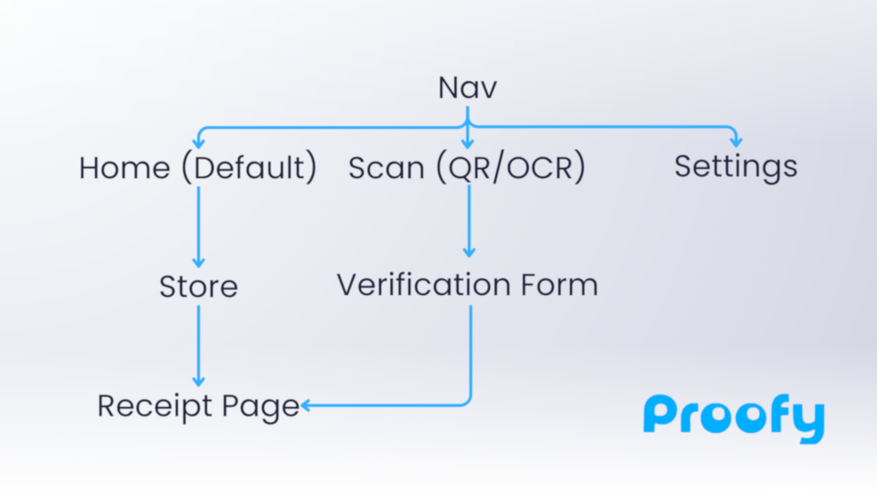
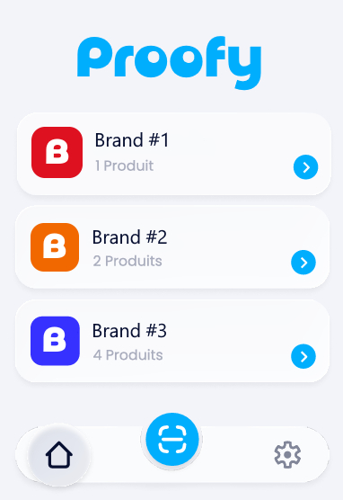

Mockups


In February 2026, as part of a team of four students at Sophia Ynov Campus, we tackled a hands-on UX/product sprint: define a real-world mobile problem, frame a valid MVP scope using structured product methodology, and prototype four independent solutions in Figma. The constraint was intentional: one concept, four individual design interpretations, each graded on UX rigor, not aesthetic preference.
Léo Tosku (UI design) · Benoîte Macchi (UX research) · Ryan Aversa (UX research) · Margaux Halby (UX research)
Every time I needed a warranty, the receipt was gone. That’s not a personal failure. That’s a UX gap.
Warranties exist on paper. Paper gets lost. When you need proof of purchase for a return or a broken product under guarantee, the receipt is never where you left it. Existing solutions either require an account (and therefore hand your purchase data to a third party), rely on email forwarding, or are too generic to be practical. The opportunity: a zero-account, scan-first mobile vault for receipts and warranties, legally usable, locally stored, always accessible.
We used MoSCoW prioritization to cut ruthlessly. Must-haves: OCR receipt scanning, manual warranty entry, a browsable store list, instant search, and per-receipt detail pages with PDF export. Deferred to later: dark mode, discount coupon management, email import, QR codes at checkout. The goal was a focused, shippable core, not a feature wishlist dressed as a product.
| Feature | Must | Should | Could | Won’t |
|---|---|---|---|---|
| Scan receipt by photo (OCR) | ✓ | |||
| Manual warranty / receipt entry | ✓ | |||
| Store list home screen | ✓ | |||
| Receipt detail page | ✓ | |||
| Instant search | ✓ | |||
| PDF export | ✓ | |||
| Sort by category / store | ✓ | |||
| Warranty expiry notifications | ✓ | |||
| Storage & settings screen | ✓ | |||
| QR code at checkout | ✓ | |||
| Light / dark theme | ✓ | |||
| Automatic email import | ✗ | |||
| Discount coupon management | ✗ |
Five stories anchored every interface decision: the pressured scanner who needs to capture a receipt in under ten seconds, the budget tracker browsing spending by store and month, the privacy-conscious buyer who refuses to create an account, the warranty hunter who wants a notification before a product expires, and the searcher who needs to find any receipt instantly. Every screen traces back to one of them.
As a user in a hurry, I want to scan my receipt with my camera to save my purchase instantly, without retyping anything.
As someone watching their budget, I want to browse my receipts by store and date to know how much I spent this month.
As a privacy-conscious user, I want my receipts to stay on my phone only, with no online account required.
As an electronics buyer, I want a notification before my warranty expires so I can act before it’s too late.
As a frequent shopper, I want to find any receipt instantly by store name or amount without scrolling.
The app has five surfaces: a home screen showing store cards, a per-store receipt list sorted by date, an individual receipt detail page with PDF download, a central scan button in the nav that opens the camera directly, and a verification screen after OCR processing where the user can correct detected data before saving. Settings handles storage management, notification preferences, and theme. No account screen, by design.

My individual prototype in Figma used a light glassmorphic visual language: white and soft blue surfaces with frosted glass depth, very dark navy for primary text, light grey for secondary labels. The target was a native iPhone feel, familiar, frictionless, premium without being cold. The scan flow was designed to resolve in three taps: open camera, confirm scan, save. The detail page surfaced only the data that mattered: store name, date, total amount, and guarantee expiry.

The scan button lives in the nav because the product only works if adding a receipt takes less time than losing one.
A complete product definition exercise: problem framing, MoSCoW scoping, user story writing, information architecture, user flow mapping, and a Figma prototype. Four individual interpretations of the same brief within the same team. It established a foundation in structured product thinking: defining scope before touching a frame, grounding every interface decision in a named user and a specific friction point, and knowing what to cut before knowing what to build.